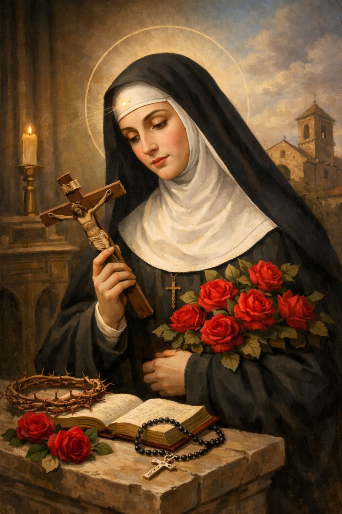
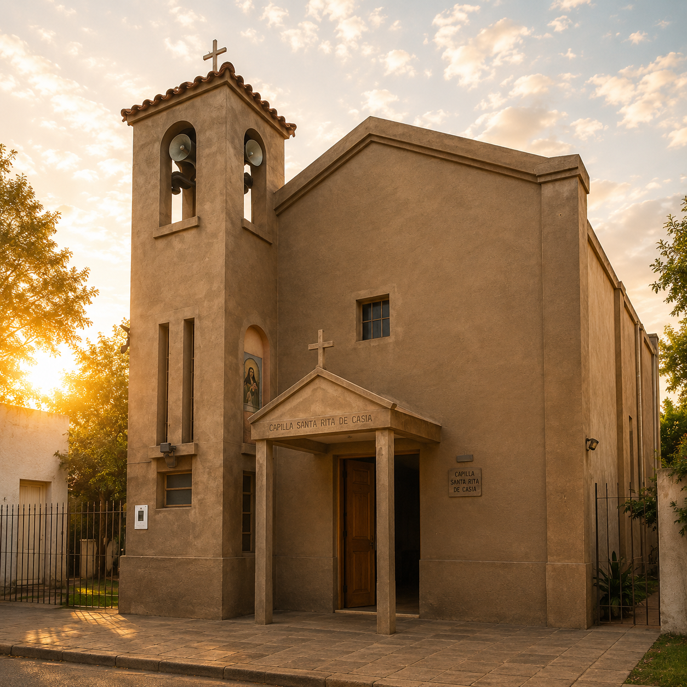

Jueves 21 de mayo
Apertura
- 18:30Santo Rosario
- 19:00Santa Misa rezando por las vocaciones
21 al 24 de mayo de 2026
San Vicente · Santa Fe
Programa oficial 2026
Lema del año: «Santa Rita Mujer Misionera».
Invitan Capilla Santa Rita de Casia y Parroquia San Vicente de Paúl.
Apertura
Día de la Santa Patrona
Vigilia
Gran Celebración Patronal
Vida y devoción
Margherita Lotti —Santa Rita de Casia— es conocida como la «santa de los imposibles» por su capacidad de interceder en causas que parecen sin salida.
Santa Rita nació en 1381 junto a Casia, en la hermosa Umbría, tierra de santos. Fue una niña precoz, inclinada a las cosas de Dios. Sentía desde niña una fuerte inclinación a la vida religiosa, pero la Providencia dispuso que pasara por todos los estados de la vida: esposa, madre, viuda y religiosa, para santificarlos con su ejemplo.
Por conveniencias familiares se casó con Pablo Fernando, de su aldea natal. Fue un verdadero martirio: Pablo era caprichoso y violento. Rita aceptó su papel con silencio, sufrimiento y oración. Su bondad y paciencia lograron la conversión de su esposo. Nacieron dos hijos gemelos que les llenaron de alegría.
A la paz siguió la tragedia: su esposo fue asesinado como secuela de su antigua vida. Rita perdonó e inculcó el perdón a sus hijos. Al ver que no podía apartarlos de la idea de venganza, pidió al Señor que se los llevara antes que cometer un nuevo crimen, y el Señor atendió su súplica.
Tras años de soledad y oración, intentó cumplir el deseo de su infancia: ser religiosa. Tres veces pidió ingresar a las Agustinas de Casia y tres veces fue rechazada. Por fin, en un prodigio, se le aparecieron San Juan Bautista, San Agustín y San Nicolás de Tolentino, y fue introducida milagrosamente en el monasterio. Hizo su profesión religiosa en 1417 y allí pasó 40 años entregada a Dios.
Jesús selló a Rita con uno de los estigmas de la Pasión: una espina muy dolorosa en la frente. En el jardín del convento, estando enferma y en pleno invierno, nacieron una rosa y dos higos para satisfacer sus deseos de enferma. Al morir en 1457, la celda se iluminó y las campanas tañeron solas. Su cuerpo permanece incorrupto.
Causas imposibles, casos difíciles, matrimonios en conflicto, viudas, madres, enfermos y víctimas de violencia.

Oración a Santa Rita
«¡Oh Santa Patrona de los necesitados, Santa Rita, cuyas súplicas ante el Divino Maestro son casi irresistibles, que por tu generosidad para con los que invocan tu socorro has sido llamada Abogada de los imposibles, e incluso de los casos desesperados; ruega por nosotros, intercede por nuestras peticiones, ven en nuestra ayuda en esta gran necesidad para que recibamos el consuelo y socorro del Cielo en todas nuestras necesidades, tribulaciones y sufrimientos. Amén.»
Nuestra casa
La Capilla Santa Rita de Casia es una de las capillas más queridas de San Vicente, Santa Fe. Forma parte de la comunidad parroquial de San Vicente de Paúl, perteneciente a la Diócesis de Santa Fe.
La imagen venerada de Santa Rita preside el altar y es llevada en procesión por las calles de la ciudad cada año en su festividad, el 22 de mayo. Cada año, en la celebración patronal, miles de feligreses acompañan a la santa de los imposibles en una jornada de fe, oración y comunidad.
La capilla abre sus puertas todos los días para quienes buscan un espacio de oración, encuentro parroquial y devoción a Santa Rita. Organiza junto a la Parroquia San Vicente de Paúl la celebración patronal de mayo.
Todos los días de 8:00 a 18:00 hs.

Visitanos
Belgrano 333
San Vicente, Santa Fe, Argentina
Todos los días de 8:00 a 18:00 hs.